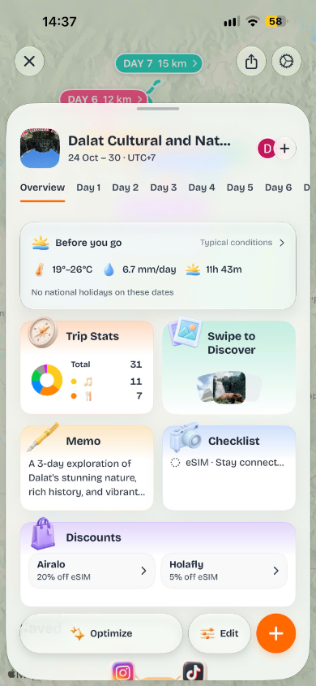

Xem những nơi đã chọn và ngày dự kiến.
Mẫu R17 · chuẩn hóa 390 px

Wander · thử vật liệu, nội dung minh họa
Hành trình Đà Nẵng
Ngày dự kiến · Nội dung thử
Trước khi đi
Bản đồ và những điểm muốn ghé.
Gom ý tưởng cho chuyến đi.
Việc cần làm trước chuyến đi.
Đang so vật liệu, không phải màn sản phẩm đã duyệt.
Ảnh: catalog/photos/ba-na-1.jpg; ghi công theo catalog, xem báo cáo.